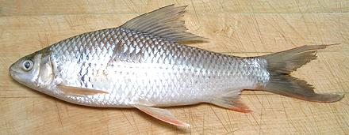

Silver Carp

[Hypophthalmichthys molitrix]
This is an Asian carp that has been introduced worldwide for food and
for cleaning algae out of lakes and reservoirs - though it often
becomes a pest. This fish, like the closely related
Bighead Carp, is a plankton eating
filter feeder, but it feeds a little deeper than the Bighead. It is
the worlds most important farmed fish, but it only began to to appear
in Southern California's Asian markets in 2012. By 2015 It could
be found both in the live fish tanks and frozen.
This fish is a major pest in the Mississippi, Illinois, Ohio
and Missouri rivers. While the photo specimen was just just 13 inches
long and weighed only 12-1/8 ounces, they can grow to well over 40
pounds and leap 10 feet out of the water when startled. Many
recreational boaters in fast ski boats have been injured and even
killed by leaping fish. Contests are held to catch as many as
possible, but there is no effective control method - except to eat
them all. They are notably delicious, but as with any other carp,
you have to get accustomed to dealing with the spines, something
which most of the world has accomplished.
This is one of the most widely farmed fish in the world, and has an
ecological advantage over many farmed fish in that it doesn't need to be
fed other fish. Many other farmed fish require harvesting wild fish from
the sea and making them into fish meal pellets. This fish gets along fine
on vegetarian material, including algae.
More on the Carp Family.
This is a delicious fish. The flesh is white, tender, smooth
in texture and mild but flavorful. It has practically no "fishy" taste
at all, and is considered one of the very finest eating fish - just about
everywhere except North America.
Silver Carp is a fish to eat in quiet contemplation, not boisterous
conversation, and should never be served to children - because you must
pay close attention to the fish, and appreciate just how delicious it is.
You see, like all others in this order of fish, Silver Carp has a
"spine problem". The long, branching, thread-like spines embedded in the
flesh can be rather annoying to the neophyte, and, unlike those of the
milkfish, cannot be removed before cooking. To enjoy delicious carp,
Americans just have to learn to deal with the spines at the table like
the rest of the world does. If you don't want to deal with them, use
catfish instead (unless you're an observant Jew or Muslim - catfish
isn't kosher or halal).
Personally I don't have a big problem with the spines. As with other
fish, I eat carp with chopsticks, breaking it up as I go along. The spines
are fairly easy to find and pull out that way, but some do sneak by and
have to be dealt with in the mouth. Even in formal Victorian society it
was permissible to remove fish bones from the mouth (but nothing else)
so they could enjoy delicious carp.
Of course, if you just can't deal with the spines, you can do as the
Asians do with essentially inedible fish like Dace or Featherback. Make
them into fish balls.
There's no need to skin Silver Carp, but some picky eaters just won't
eat skin, so you may want to serve skin-on filets skin side down so
such people can leave it on the plate easily. Yes, they're being stupid,
but what can you do?
Buying:
Most American fish markets don't carry carp,
but it can be found in markets serving a Southeast Asian Chinese or
Philippine community. Markets serving Chinese and Southeast Asians
will have Silver Carp, Common Carp, and some other varieties. Silver
Carp can often be found in the live fish tanks. The Philippine
markets generally have Common Carp, but not Silver Carp. The photo
specimen was purchased frozen for 2015 US $2.99 / pound, but live ones
sell for about $5.49 per pound.
Cooking:
Most cooking methods can be used
with Silver Carp. Fillets can be pan fried with a light dusting of rice
flour, but not heavy batter which will make the spines very difficult
to find. For the same reason only light sauces should be used. I eat
mine with a lemon, white wine and butter sauce, with herbs. The
flesh remains firm enough to steam and poach, but is is quite tender,
so a rapid boil or long cooking is likely to break it up. You can
poach fillets skin-on. They will curl, but you can lay them out flat
on the plate.
Do Not
cut any carp into pieces smaller than 2 inches long.
Doing so makes the spines nearly impossible to deal with. For small fish,
(fillets or whole) it is best to not cut at all if possible. The larger
the fish, the easier the spines are to deal with.
Scales:
The scales are large, but have very moderate
adhesion, so they are pretty easy to scrape off and don't fly around
a whole lot. They curl as they dry so are easy to clean up - but
don't let them get into your drains, they could clog.
Cleaning:
This fish is fairly easy to clean, just cut
from the vent right up to the underside of the jaw (you'll need kitchen
shears from the pelvic fins forward) and pull stuff out. While the
innards pull out easily enough, there's quite a bit of them, and they
are rather mushy. Rinse the cavity well, rubbing off any remaining
mush. The gills are fairly easy to pull out, but break up a lot. It
may be easier to deal with them when preparing the head for stock.
Skin:
Silver Carp skin shrinks only moderately when
cooked. It has no strong or objectional flavors, so it hardly seems
worth the bother to remove it. If you insist, Silver Carp fillets can
be skinned using the standard long knife and cutting board
Method, but be warned - the skin
is thin, delicate and breaks up very easily - better to leave it.
Filleting:
This fish is fairly easy to fillet, with
a coherent bone structure to follow. The flesh is, however, soft and
tender, so handle with care. When you get to the rib cage, just use
your kitchen shears to cut the ribs from the backbone and pull them
from the fillet with long nose pliers - the biggest ones practically
fall out. At this time you'll feel plenty of the infamous spines. Don't
try to pull them out, they are branched and in firm - you'll tear away
too much flesh.
Yield:
The photo specimen, 13 inches long and 12-1/8
ounces, yielded 7.0 ounces of skin-on fillet (58%) and 6 ounces skinless
fillet (49%). Some fish, with more stuff inside, have yielded 48%
skin-on.
Stock:
Silver Carp heads, fins, bones and any removed
skins make a very serviceable light-medium flavored stock. There is
very little oil - but you should separate what there is and discard it
(use your gravy separator). For details see our
Fish Stock page.
sf_carpsilz* 130820 - www.clovegarden.com
©Andrew Grygus - agryg@clovegarden.com - Photos
on this page not otherwise credited © cg1
- Linking to and non-commercial use of this page permitted